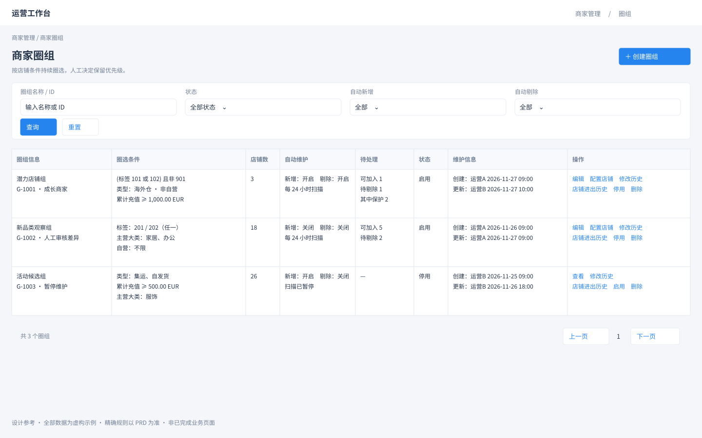
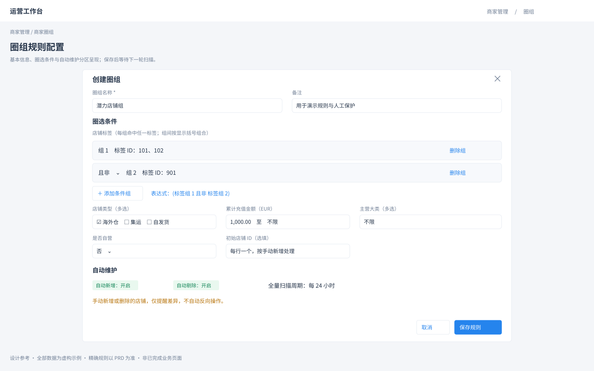
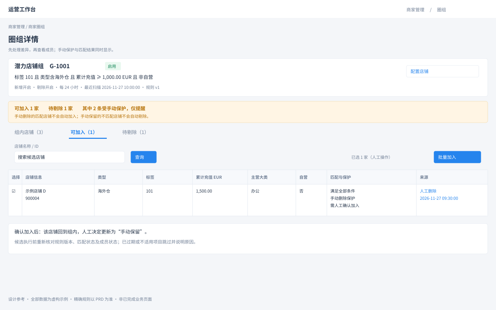
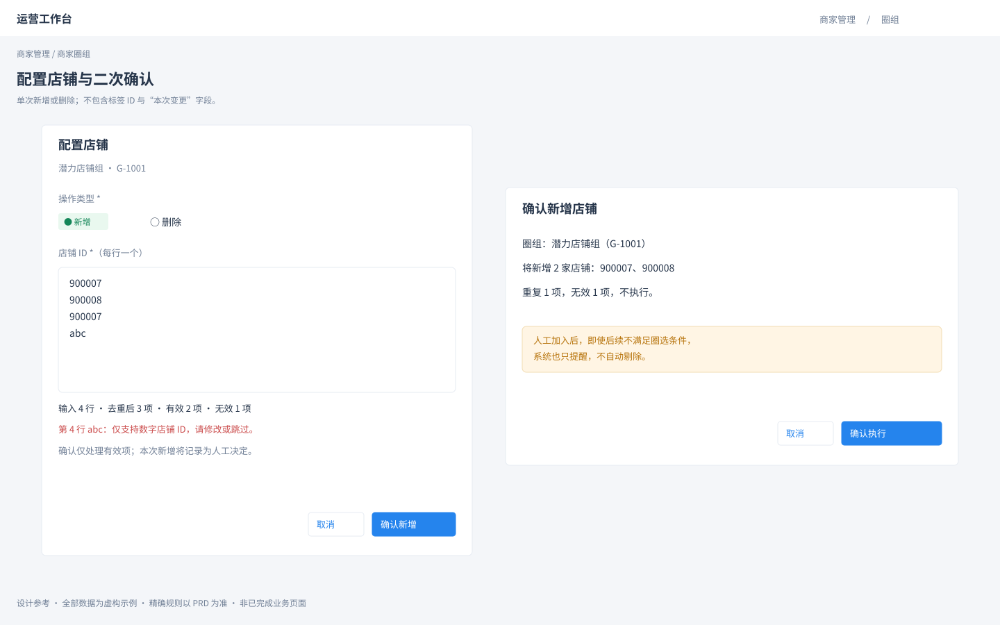
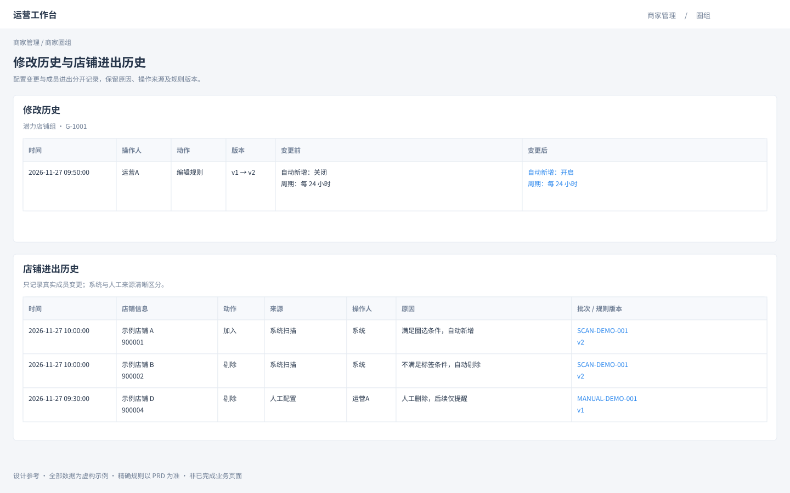

商家圈组 · 需求与设计预览
当前为开发参考稿，完整业务交互待下一阶段实现。所有样本均为虚构。
规则：条件圈店、自动新增与剔除独立配置、人工决定只提醒不自动反向覆盖。
圈组列表

创建 / 编辑圈组

详情与待处理

配置店铺与确认

修改与进出历史

当前为开发参考稿，完整业务交互待下一阶段实现。所有样本均为虚构。
规则：条件圈店、自动新增与剔除独立配置、人工决定只提醒不自动反向覆盖。




